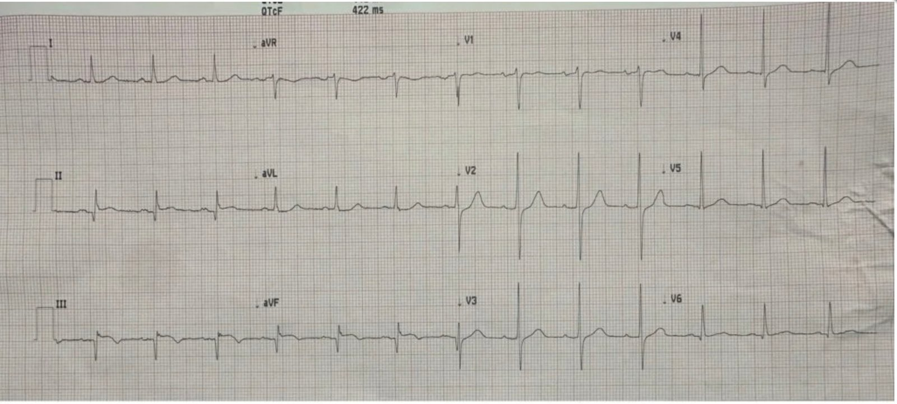
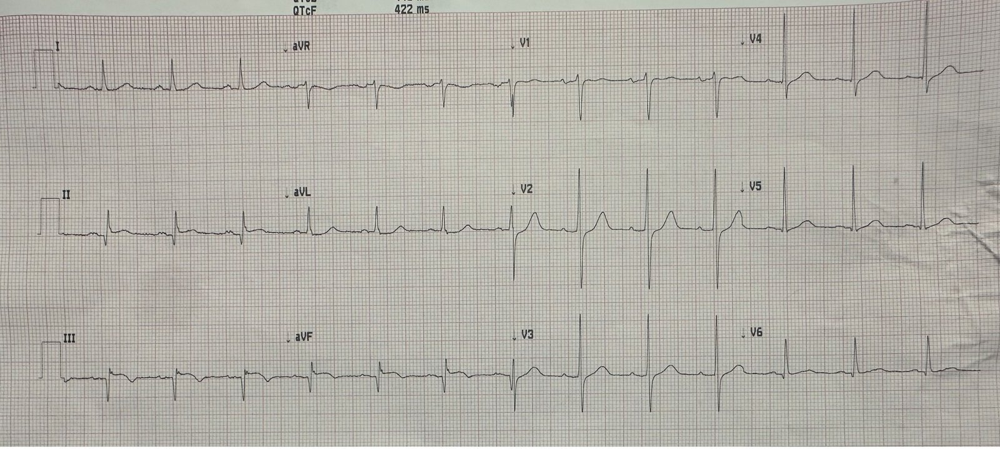
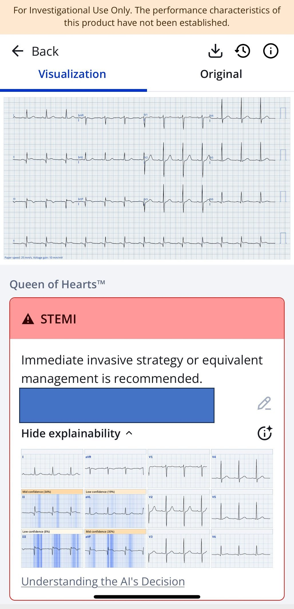
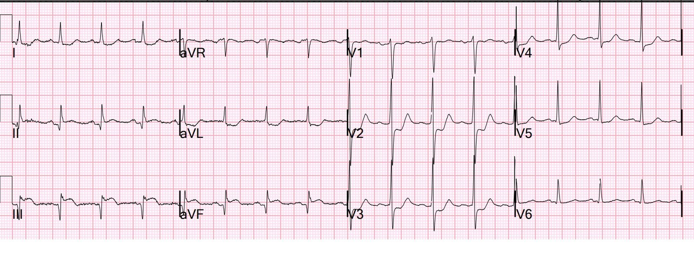
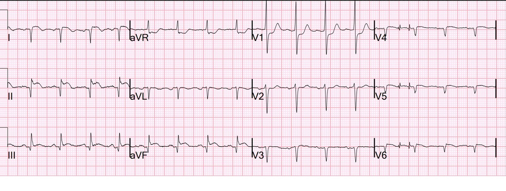
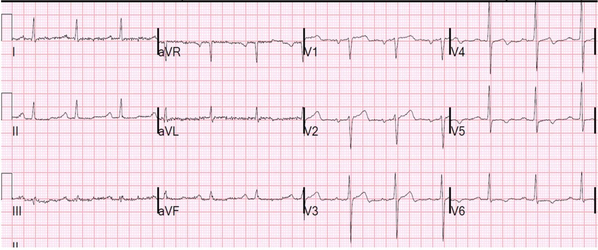
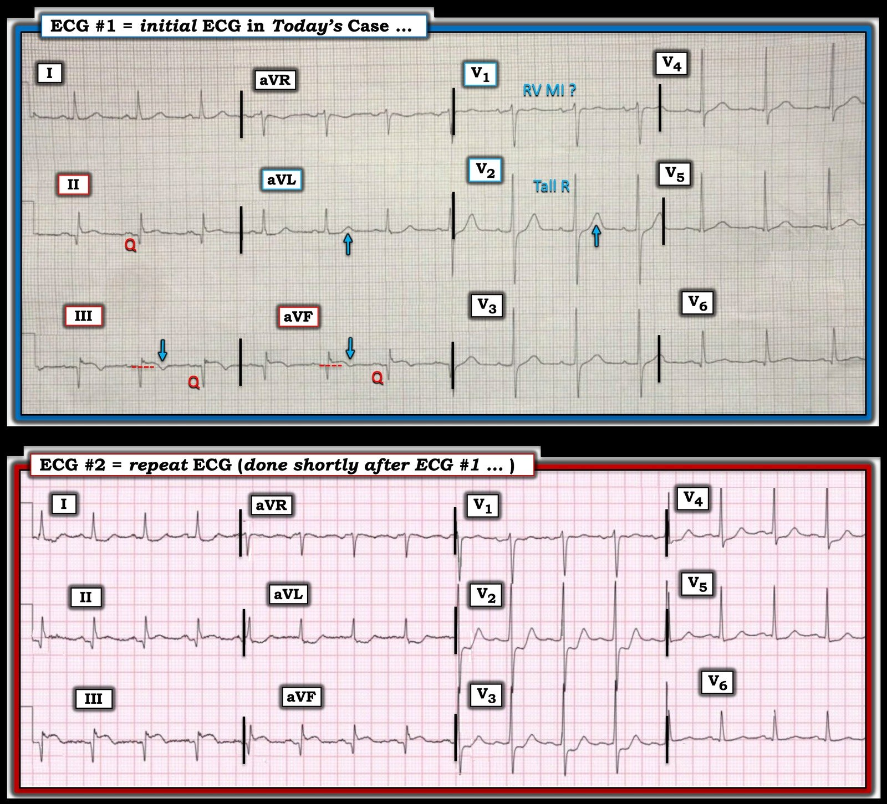
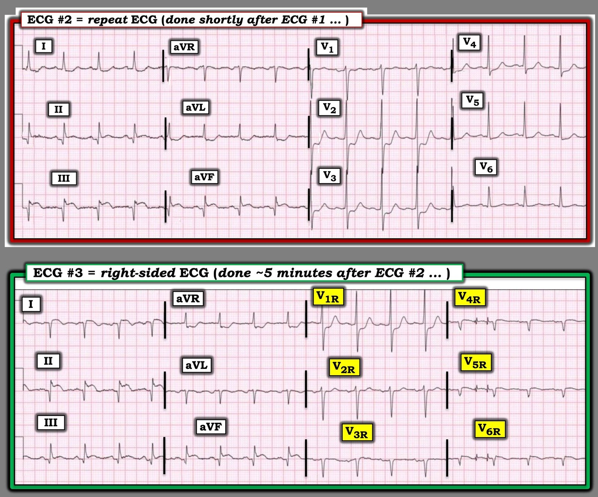
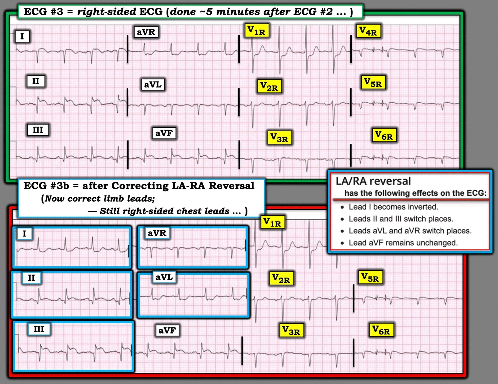
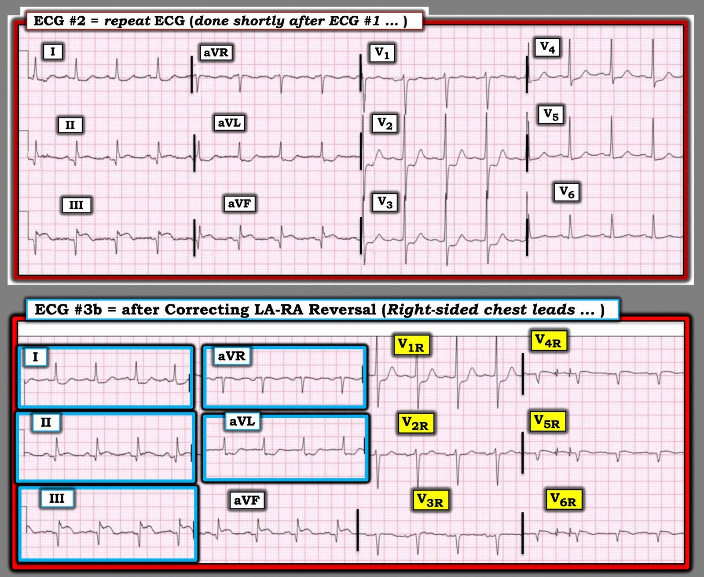

07/12/2025 — Đau ngực đã hết. Sóng T tái tưới máu. Bệnh nhân có nên vào phòng thông tim cấp cứu?
Bản dịch tiếng Việt của bài "Chest pain, resolved. Reperfusion T-waves. Should the patient go emergently to the cath lab?" – Dr. Smith’s ECG Blog. Giữ nguyên toàn bộ 9 hình ảnh của bản gốc.


Bài viết của Emily Dawra, một trong những bác sĩ nội trú Y học Cấp cứu năm 3 (EM G3) xuất sắc của chúng tôi, với một vài chỉnh sửa của Smith.
Ca bệnh: Một bệnh nhân được chuyển từ phòng khám đến khoa cấp cứu (ED) với “kích hoạt STEMI”. Ông bị đau ngực khi gắng sức ngắt quãng (stuttering) và giảm khả năng gắng sức trong gần 1 tuần. Tuy nhiên, ông đang ở nước ngoài và nói với chúng tôi rằng ông “không muốn đến bệnh viện ở đó”, nên ông đã chờ đến cuộc hẹn thuận tiện với bác sĩ chăm sóc ban đầu tại phòng khám ở Minnesota. Bác sĩ của ông đã nhạy bén đánh giá được bệnh sử đáng lo ngại, ghi điện tâm đồ ban đầu mà ông nhận ra là rất đáng lo ngại, và vì vậy đã chuyển bệnh nhân đến khoa cấp cứu sau khi cho uống 324mg aspirin.
Đây là điện tâm đồ ghi tại phòng khám, ghi khi bệnh nhân hết đau:


Bạn nghĩ gì?
Điện tâm đồ này chẩn đoán OMI cấp hoặc bán cấp, gần như chắc chắn đã tái tưới máu. Có ST chênh lên ở thành dưới (II, III, aVF) và ST chênh xuống ở các chuyển đạo trước tim phía trước (V2, V3), chẩn đoán một biến cố tắc gây nhồi máu dưới-sau. Nhưng cũng cần chú ý sóng T đảo ngược ở thành dưới, gợi ý mạnh có yếu tố tái tưới máu, đặc biệt trong bối cảnh đau ngực đã hết (không còn đau). Cũng có sóng Q đã hình thành rõ, gợi ý nhồi máu đã ở giai đoạn bán cấp (vài giờ tuổi) vào thời điểm tái tưới máu.
Đây là kết quả đọc của PMCardio Queen of Hearts:


PMcardio for Individuals nay đã có mô hình Queen of Hearts mới nhất, khả năng giải thích của AI (bản đồ nhiệt màu xanh lam) và % phân suất tống máu thất trái. Tải ngay cho iOS hoặc Android: https://individuals.pmcardio.com/app/promo?code=DRSMITH20. Là thành viên cộng đồng của chúng tôi, bạn có thể dùng mã DRSMITH20 để được giảm giá độc quyền 20% cho năm đầu tiên của gói đăng ký hằng năm. Tuyên bố miễn trừ: Một số Mô-đun AI ECG là thiết bị y tế mang dấu CE theo EU MDR và chỉ được chứng nhận lưu hành tại Liên minh châu Âu và Vương quốc Anh. Công nghệ PMcardio chưa được Cục Quản lý Thực phẩm và Dược phẩm Hoa Kỳ (FDA) cấp phép sử dụng lâm sàng tại Hoa Kỳ.
_______________________________
Smith: Tôi ngạc nhiên là cô ấy không nói “OMI đã tái tưới máu” (Reperfused OMI).
Bác sĩ nội trú chuyên khoa tim mạch (fellow) đã có mặt ở khoa cấp cứu khi bác sĩ Smith đến.
Bác sĩ Smith xem điện tâm đồ và nói “Đây là một OMI đã tái tưới máu. Bệnh nhân nên vào phòng thông tim (cath lab) ngay bây giờ vì có nguy cơ rất cao tắc lại bất cứ lúc nào.”
Bác sĩ fellow trao đổi với bác sĩ can thiệp, người này nói: “Đây là NSTEMI và bệnh nhân có thể chờ can thiệp.”
Vào lúc này, khi bệnh nhân vẫn hoàn toàn không đau, chúng tôi ghi một điện tâm đồ khác:


Lúc này ST chênh lên ở thành dưới và ST chênh xuống ở các chuyển đạo trước tim nặng lên đáng kể. Tương ứng, ST chênh xuống soi gương ở aVL cũng tăng. Đây giờ rõ ràng là một nhồi máu cơ tim do tắc (OMI) giai đoạn tối cấp.
Động mạch đang tắc lại mà không hề gây đau!
5 phút sau chúng tôi ghi điện tâm đồ chuyển đạo bên phải:


Các chuyển đạo chi không đặt khác đi khi ghi điện tâm đồ bên phải (chỉ các chuyển đạo trước tim được đảo). Các chuyển đạo chi lúc này cho thấy giả bình thường hóa sóng T ở thành dưới [tắc lại làm cho các sóng T tái tưới máu vốn đảo ngược trước đó trở nên dương (“giả bình thường hóa”)].
V4-6 lúc này là V4R, V5R, V6R trên ngực phải.
Bình luận về điện tâm đồ bên phải: mọi chuyển đạo của điện tâm đồ bên phải đều được đảo: [V1 = V2R ở bên phải xương ức; V2 = V2R ở bên trái xương ức, v.v.] Sóng Q là bình thường ở các chuyển đạo ngực phải vì chúng đối diện với thất trái vốn chiếm ưu thế về điện. Lưu ý ST chênh lên nhẹ ở V4R, V5R và V6R, rất gợi ý nhồi máu thất phải.
= = =
- Grauer: BẠN có nhận ra “sự cố kỹ thuật” (technical misadventure) khi ghi điện tâm đồ bên phải không? (Mời xem Hình 2, 3 và 4 trong PHẦN BỔ SUNG ở cuối Bình luận của tôi bên dưới để thấy minh họa điều đã xảy ra! ).
= = =
Với diễn tiến của các thay đổi trên điện tâm đồ và bệnh sử đáng lo ngại, dù lúc này không có đau ngực, may mắn là bệnh nhân đã được đưa vào phòng thông tim.
Chụp mạch vành:
Hẹp 90% đoạn xa thân chung động mạch vành trái (LM)
Hẹp 90% lỗ vào đoạn gần LAD
Tắc gần hoàn toàn nhánh chéo 1 (LADD1) và nhánh chéo 2 (LADD2)
Tắc gần hoàn toàn nhánh bờ tù 1 (OM-1)
Hẹp 70-80% đoạn giữa và đoạn xa RCA
OM-1 có lẽ là động mạch thủ phạm. Vì đoạn gần RCA không bị tổn thương, ST chênh lên ở các chuyển đạo bên phải có lẽ là dương tính giả.
Siêu âm tim:
Phân suất tống máu thất trái ước tính ở giới hạn dưới bình thường - 51%. Rối loạn vận động thành khu trú: thành dưới vùng giữa-mỏm và thành dưới. Các thành vách loạn động (dyskinetic), và có thể đã phình. Kích thước và chức năng thất phải bình thường. (Điều này xác nhận nhồi máu thất phải là rất khó xảy ra).
Xử trí
Do bệnh nhiều nhánh mạch vành nặng, bao gồm đoạn gần LAD. Một bóng đối xung nội động mạch chủ được đặt tạm thời trong khi lên kế hoạch phẫu thuật bắc cầu chủ vành (CABG) vào ngày hôm sau, nhằm tăng áp lực tưới máu mạch vành và giúp khởi mê an toàn hơn vào ngày hôm sau.
Không can thiệp qua da trên động mạch thủ phạm OM1. Chúng tôi thấy điều này thường xuyên: khi bệnh nhân cần CABG, động mạch thủ phạm không được can thiệp, ngay cả khi dòng chảy kém. Tôi không rõ vì sao lại như vậy.
Troponin I độ nhạy cao (hs troponin I) đầu tiên trả về là 3443 ng/L. Lần troponin tiếp theo mãi 6 giờ sau mới đo và là 2987 ng/L. Tôi ngờ rằng nó đã tăng một chút rồi giảm, đỉnh xảy ra vào một thời điểm nào đó trong khoảng giữa.
Những lời nhắc & Điều cần nhớ của Emily:
- Đừng để riêng việc hết đau ngực khiến bạn ngần ngại kích hoạt phòng thông tim – điện tâm đồ là yếu tố then chốt! Nhất là khi điện tâm đồ đáng lo ngại hoặc bệnh sử trước đó rất gợi ý tắc động mạch vành.
- Ước tính hơn 20% các cơn đau tim là thầm lặng [1]. Mặc dù “nhồi máu cơ tim thầm lặng” là nhồi máu không được phát hiện cho đến một lần khám bác sĩ sau đó, điều này nhấn mạnh thực tế rằng thiếu máu cục bộ cơ tim có thể hoàn toàn không triệu chứng. Chờ bệnh nhân báo với bạn rằng họ đau ngực trở lại là nguy hiểm.
- Ghi lại điện tâm đồ cứu sống người bệnh!
- Queen of Hearts có thể phân biệt nhồi máu cơ tim do tắc cấp đang diễn ra với OMI đã tái tưới máu, vì vậy hãy dùng nó khi nó có mặt tại Hoa Kỳ!
Tài liệu tham khảo:
[1] Tsao CW, Aday AW, Almarzooq ZI, và cs. Heart Disease and Stroke Statistics—2023 Update: A Report From the American Heart Association. Circulation. 2023;147:e93–e621.
Thêm Những điểm cần học từ Smith:
- Bất kỳ bệnh nhân OMI nào đã tái tưới máu đều có thể tắc lại bất cứ lúc nào.
- Tắc lại không phải lúc nào cũng kèm đau ngực
- Theo ý kiến của tôi, những bệnh nhân này nên được chụp mạch vành cấp cứu. Họ là “STEMI thoáng qua” hoặc “OMI thoáng qua”
- STEMI thoáng qua đã được Lemkes nghiên cứu, phân ngẫu nhiên vào nhóm can thiệp cấp cứu và nhóm can thiệp trì hoãn. Tử vong là như nhau, nhưng nhiều bệnh nhân ở nhóm trì hoãn đã tắc lại và phải vào phòng thông tim cấp cứu giữa đêm.
- Xem các ca này để thấy rằng nếu không can thiệp cấp cứu, bệnh nhân có thể tắc lại mà không đau. Do đó bạn nên theo dõi đoạn ST liên tục. Xem ca này: Why we need continuous 12-lead ST segment monitoring in Wellens’ syndrome (Vì sao cần theo dõi đoạn ST liên tục 12 chuyển đạo trong hội chứng Wellens). Đây là điện tâm đồ ban đầu của ca đó, ghi sau khi đau ngực trước viện đã hết:


Thêm các ca bàn về theo dõi đoạn ST liên tục 12 chuyển đạo.
= = =
======================================
BÌNH LUẬN CỦA TÔI, bởi KEN GRAUER, MD (7/12/2025):
Trong ca hôm nay, bác sĩ Smith đặt ra câu hỏi quan trọng: liệu có cần thông tim cấp cứu ở một bệnh nhân vừa bị nhồi máu cơ tim — nhưng hiện đã hết đau và có sóng T tái tưới máu trên điện tâm đồ?
= = =
Làm sao bạn biết được?
Làm sao bạn biết nhồi máu cơ tim mà bệnh nhân này vừa trải qua đã “hoàn tất” — hay chỉ hoàn tất trong chốc lát nhưng hiện vẫn đang tiếp diễn?
- Câu trả lời đơn giản cho câu hỏi trên là Bạn không biết … điều mà may mắn thay trong ca hôm nay đã nhanh chóng được giải quyết bằng cách ghi lại điện tâm đồ ngay sau khi liên hệ với một bác sĩ hội chẩn phản đối.
- Nhưng nếu điện tâm đồ ghi lại không cho thấy thay đổi nào thì sao? Câu trả lời là chúng ta đơn giản là không biết liệu một OMI mới xảy ra có tự tắc lại hay không, hoặc khi nào …
- Một gợi ý quan trọng trong bệnh sử hôm nay rằng nhồi máu cơ tim cấp này có thể vẫn đang diễn ra — là triệu chứng của bệnh nhân “ngắt quãng” (stuttering) trong 2 ngày qua. Đó là vì một nguyên nhân thường gặp của “triệu chứng ngắt quãng” là các đợt tái tưới máu tự phát liên tiếp xen kẽ bởi các đợt tắc lại tự phát thoáng qua. Cuối cùng, động mạch “thủ phạm” sẽ đạt đến trạng thái sau cùng — nhưng chúng ta không hề biết trạng thái sau cùng này sẽ là một động mạch “thủ phạm” thông hay tắc hoàn toàn.
= = =
Các điện tâm đồ hôm nay cho thấy gì?
Để rõ ràng và dễ so sánh, trong Hình 1 — tôi đặt điện tâm đồ ban đầu và điện tâm đồ ghi lại cạnh nhau.
- Điện tâm đồ #1 — cho thấy nhịp xoang với dấu hiệu rõ ràng của nhồi máu cơ tim thành dưới. Cả 3 chuyển đạo thành dưới (II,III,aVF) đều có sóng Q lớn, nhưng vẫn còn ST chênh lên — và có phần cuối sóng T đảo ngược ở chuyển đạo III và aVF (các mũi tên XANH LAM trong Hình 1).
- Xác nhận nhồi máu đến từ đoạn ST dẹt với ST chênh xuống nhẹ ở chuyển đạo aVL — kèm phần cuối sóng T dương (ST-T ở chuyển đạo aVL gần như là hình ảnh soi gương ngược lại của ST-T ở chuyển đạo III).
- Sóng T cao hơn dự kiến ở chuyển đạo V2, và ST chênh xuống rất rất nhẹ ở chuyển đạo này phù hợp với nhồi máu cơ tim thành sau. Cũng như với 3 mũi tên XANH LAM ở chuyển đạo chi — điều này càng củng cố nhận định OMI dưới-sau, nay đã có sóng T tái tưới máu.
= = =- ĐIỂM THEN CHỐT (PEARL): Lưu ý rằng dù có bằng chứng OMI thành sau — đoạn ST ở chuyển đạo V1 lại hoàn toàn không chênh xuống. Điều này gợi ý “một yếu tố khác” hẳn đang làm giảm mức ST chênh xuống mà bình thường ta sẽ thấy ở chuyển đạo V1 do OMI thành sau — và “yếu tố khác” này nhiều khả năng nhất là nhồi máu thất phải cấp (khi đi kèm nhồi máu cơ tim thành dưới cấp/mới xảy ra, điều này gợi ý mạnh đoạn gần RCA là động mạch “thủ phạm”).
- LƯU Ý: Khả năng khác để giải thích đoạn ST ở chuyển đạo V1 thẳng đuỗn ngoài dự kiến — có thể là bệnh nhiều nhánh mạch vành với kiểu tuần hoàn bàng hệ khó dự đoán (điều mà ta chỉ có thể xác minh qua thông tim) — và thông tim ở bệnh nhân này sau đó đã cho thấy đúng như vậy!
= = =
Hình 1: So sánh 2 điện tâm đồ đầu tiên trong ca hôm nay.


= = =
Điện tâm đồ #2 cho thấy gì?
So sánh từng chuyển đạo trong Hình 1 giữa điện tâm đồ ghi lại và điện tâm đồ ban đầu cho thấy chỉ trong vòng vài phút — đã có thay đổi ST-T động (dynamic).
- Tần số tim nhanh hơn.
- ST chênh lên nhiều hơn ở mỗi chuyển đạo thành dưới. ST-T ở chuyển đạo III và aVF nay đã là tối cấp!
- ST chênh xuống soi gương rõ hơn nhiều ở các chuyển đạo bên cao I và aVL.
- Đã có thay đổi rõ rệt về hình dạng và tăng mức ST chênh xuống ở các chuyển đạo V2,V3,V4.
- Điều cốt lõi: Nhiều khả năng động mạch “thủ phạm” đã tự mở lại vào lúc ghi điện tâm đồ #1 — nhưng nay đã tự đóng lại. Nhồi máu cơ tim dưới-sau của bệnh nhân này vẫn đang diễn ra! Chính vì không có cách nào dự đoán chính xác liệu tắc lại tự phát có xảy ra hay không, hoặc khi nào — nên xử trí tối ưu OMI cấp thường bao gồm thông tim sớm kèm PCI, ngay cả khi bệnh nhân đã hết đau và đã xuất hiện sóng T tái tưới máu.
= = =
= = =
* PHẦN BỔ SUNG (8/12/2025):
Điện tâm đồ thứ 3 ghi trong ca hôm nay (trình bày ở trên trong phần bàn luận của bác sĩ Smith) — được ghi với các chuyển đạo bên phải. Trong Hình 2 bên dưới — tôi đặt điện tâm đồ thứ 3 này cạnh điện tâm đồ #2 để thuận tiện đánh giá các chuyển đạo bên phải, vốn được dùng để xác định có kèm nhồi máu thất phải hay không.
- CÂU HỎI — Bạn có thấy “sự cố kỹ thuật” đã xảy ra khi ghi các chuyển đạo bên phải trong Hình 2 không?
= = =
Hình 2: So sánh điện tâm đồ thứ 2 và thứ 3 ghi trong ca hôm nay. Bạn có thấy “sự cố kỹ thuật” ở điện tâm đồ #3 không?


= = =
= = =
TRẢ LỜI:
Không được đổi chỗ các chuyển đạo chi khi ghi điện tâm đồ bên phải! (Chỉ các chuyển đạo ngực được đảo).
- Lưu ý trong Hình 2 — các chuyển đạo chi ở điện tâm đồ #3 trông rất khác so với ở điện tâm đồ #2 (tức là, chuyển đạo I có QRS âm toàn bộ ở điện tâm đồ #3 — và QRS dương toàn bộ ở chuyển đạo aVR!). Đó là vì ngoài việc đảo các chuyển đạo ngực — kỹ thuật viên đã nhầm lẫn đổi chỗ cả điện cực LA và RA!
- Điện tâm đồ #3 được ghi 5 phút sau điện tâm đồ #2. Lý do không nên đổi chỗ điện cực LA và RA khi ghi các chuyển đạo bên phải — là vì ta vẫn muốn so sánh được các chuyển đạo chi với điện tâm đồ ghi 5 phút sau này.
= = =
Trong Hình 3 và 4 bên dưới — tôi hiệu chỉnh việc đảo điện cực LA-RA đã bị làm nhầm khi kỹ thuật viên ghi các chuyển đạo bên phải. Sau đó tôi so sánh điện tâm đồ #2 với hình ảnh mà điện tâm đồ bên phải lẽ ra phải có.
= = =
Hình 3: Tôi trình bày ảnh hưởng của việc đảo điện cực LA-RA lên các chuyển đạo chi — và hiệu chỉnh điều này ở điện tâm đồ #3b.


= = =
Hình 4: Phép so sánh giữa điện tâm đồ #2 và điện tâm đồ bên phải lẽ ra sẽ trông như thế nào nếu điện cực LA và RA không bị đổi chỗ.
- Điện tâm đồ bên phải trong ca hôm nay được ghi ~5 phút sau điện tâm đồ #2. Sau khi hiệu chỉnh đảo điện cực LA-RA — ta có thể thấy về cơ bản không có thay đổi nào trong 5 phút này về hình dạng các chuyển đạo chi.
- Như đã nêu ở trên trong phần bàn luận của bác sĩ Smith — các chuyển đạo bên phải quả thật có ST chênh lên nhẹ ở V4R,V5R và V6R — nhưng xét kết quả thông tim và siêu âm tim, OM-1 có lẽ là động mạch “thủ phạm” trong ca hôm nay (và ST chênh lên ở các chuyển đạo bên phải này nhiều khả năng nhất là dương tính giả).


= = =
= = =